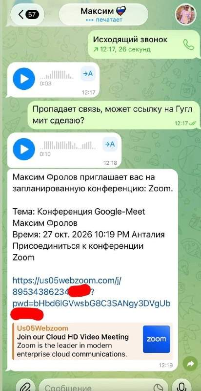
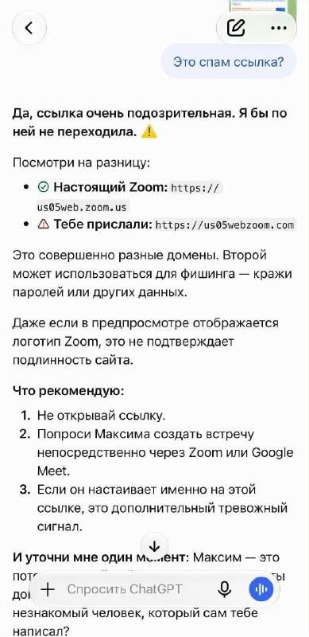

Bankrollo — посты за 27.10.2026
Россиянину выплатили почти 1 млн рублей за опоздания на работу. Электромонтёр из Петербурга каждый день приходил на 40 минут позже, за что его уволили. Мужчина решил бороться за свои права, пошёл в суд и выиграл дело. Суд учёл, что до этого сотрудник 4 года проработал без нареканий, и обязал работодателя восстановить его на работе и выплатить ему 900 тысяч рублей. @bankrollo
В Японии могут появиться иноагенты. Правительство страны предложило объявлять людей иностранными агентами и устанавливать против них санкции за действия в интересах иностранных правительств, пишет Kyodo. Такая мера обсуждается в рамках борьбы с шпионажем, её могут принять уже в 2027 году. @bankrollo
VPN-клиент Incy удалили из российского App Store. Разработчиков уведомили об этом сегодня ночью. @bankrollo
Коллекторы рекордно скупают долги россиян по микрозаймам. За девять месяцев они купили портфели на 96,78 млрд рублей, что на 16% больше год к году. С января по сентябрь общий рынок долгов обновил рекорд, достигнув 106,45 млрд рублей. Рост рынка связан с ухудшением качества портфелей МФО, накоплением просрочки и ужесточением регулирования, пишут Ведомости. @bankrollo
10-летняя россиянка оказалась должна 10 млн рублей. Задолженности ей начали приходить с трёх лет, и уже набралось 89 исполнительных производств набралось. По версии семьи, пристав привязал номер их ребёнка к чужому должнику. После этого СНИЛС стали использовать банки и МФО. При этом заменить документ нельзя, он выдаётся один раз на всю жизнь. @bankrollo
Whoosh переводит сотрудников на четырёхдневку и снижает зарплату на 20%, пишут Ведомости. В Whoosh сообщили, что компания адаптирует операционную модель к рыночной ситуации и сезонным циклам. 2025 год компания закончила с чистым убытком 2,9 млрд рублей против прибыли 1,9 млрд рублей годом ранее. @bankrollo
В продукции Путина нашли опасные бактерии, вызывающие сильнейшее отравление — Mash. Речь идёт об икре нерки «Сделано в море» производителя ООО Путина. Покупатели также пожаловались, что нашли в банке паразитов. @bankrollo
В Москве могут отключить интернет 27-29 октября в пределах Третьего транспортного кольца — Минцифры. @bankrollo https://t.me/bankrollo/68990 В Москве могут отключить мобильный интернет уже через 15 минут в пределах ТТК из-за саммита «Россия — Африка». Ограничения возможны с 27 по 29 октября: сегодня и завтра с 11:30, а в четверг — с 9:30. Будут работать только сайты из «белых списков». @bankrollo
Путину предстоят «горячие деньки», неделя будет «сверхнасыщенной» — помощник президента Ушаков. Завтра Путин примет участие в «Форуме стран — экспортёров газа», а 28–29 октября — в форуме «Россия-Африка». @bankrollo https://t.me/bankrollo/68987 Москвичей призвали вообще не ездить на машинах 28 октября. В связи с проведением саммита «Россия — Африка» 24, 27, 28 и 29 октября временно ограничат движение в центре, сообщили в Дептрансе. @bankrollo
Почти полтриллиона долларов потеряли инвесторы после обвала ИИ-рынка в Китае, пишет Reuters. Индекс технологических компаний STAR50 обвалился на 40% всего за пару месяцев. При этом во времена ажиотажа на ИИ-сектор приходилось до 57% биржевых торгов. Теперь массовый приток неопытных инвесторов сменился распродажами, а компании, готовящиеся к IPO, вынуждены снижать финансовые ожидания. @bankrollo
Путин планирует провести переговоры с лидерами Финляндии и Норвегии по вопросу Украины — Bloomberg. @bankrollo
1,5 трлн рублей кредитов взяли россияне с начала года, сообщили в Объединённом кредитном бюро. В сентябре россияне оформили рекордное за последние 2 года число кредитов — 4,42 млн. По словам экспертов, теперь в выдаче кредитов может произойти переломный момент, поскольку оснований для дальнейшего роста рынка не наблюдается. По их словам, в сегментах кредитов наличными, кредитных карт и автокредитов уже началось снижение объёмов. @bankrollo
Gemini начал банить россиян. За пару часов набралось уже больше сотни жалоб.Не помогает даже VPN, Google научилась определять регион даже со средствами обхода блокировок. @bankrollo
Путин планирует провести переговоры с лидерами Финляндии и Норвегии по вопросу Украины — Bloomberg. @bankrollo https://t.me/bankrollo/69011 Путин созвонился с президентом Финляндии и премьером Норвегии — канцелярия финляндского лидера. Там назвали разговор «открытым и содержательным», но уточнили, что политики представили мнения лишь своих стран, а не всей Европы. @bankrollo
Мосбиржа подскочила до максимума с июня после переговоров Путина с президентом Финляндии и премьером Норвегии. @bankrollo
У 450 депутатов Госдумы на банковских счетах хранятся 44,4 млрд рублей, подсчитали Ведомости изучив декларации. Это больше, чем годовые бюджеты шести российских регионов: Республика Алтай (44,1 млрд рублей), Карачаево-Черкессия (43,9 млрд рублей), Ингушетия… https://t.me/bankrollo/68962 4,5 млн рублей в месяц в среднем зарабатывает депутат Госдумы IX созыва — РБК. При этом остаток на счёте среднестатистического депутата составляет почти 102 млн рублей. @bankrollo
Диабетики в России остались без жизненно необходимого препарата — глюкагона. Его не могут найти в аптеках уже в 33 регионах России. Это лекарство применяют при критическом падении уровня сахара в крови, когда человек теряет сознание. Теперь больницы не выдают препарат пациентам и предлагают самостоятельно покупать его. Найти глюкагон в продаже практически невозможно, он есть лишь в нескольких аптеках страны. Из-за дефицита цена подскочила сразу в 20 раз — с 700 до 14 тысяч рублей, пишут Известия. @bankrollo
Килиан Мбаппе может потерять миллионы долларов из-за мема. Вчера футболист назвал революционную китайскую песню «Красное солнце в небе», посвящённую Мао Цзедуну, любимым мемом с ним. Он завирусился в начале 2026 года, когда в Реале уволили, предположительно из-за Мбаппе, очередного тренера, из-за чего француза стали называть диктатором. Сегодня китайские бренды разорвали все спонсорские контракты с футболистом, а сами китайцы призывают к бойкоту и судебным искам. Более того, государственный китайский телеканал CCTV прекратил транслировать матчи испанской Ла Лиги, так как Мбаппе является лицом Реала. @bankrollo
Не рой другому яму, а то сам в неё попадешь — Путин о желании Европы полностью отказаться от российского газа. @bankrollo
Мы сейчас прорабатываем варианты работы по газу с американскими партнёрами — Путин. @bankrollo
Газпром резко вырос на 3,5%. @bankrollo
2ГИС предупредил москвичей об отключении мобильного интернета внутри ТТК. @bankrollo
Нужно думать над прекращением конфликтов и снятием санкций для стабилизации мирового газового рынка — Путин. @bankrollo
В Нидерландах 25 тысяч госслужащих заменит ИИ. Чтобы сэкономить 3,5 млрд евро (314 млрд рублей) правительство планирует сократить примерно 16% чиновников к 2035 году, пишет Bloomberg. ИИ повысит производительность и позволит справиться с дополнительной рабочей нагрузкой, считают власти. @bankrollo
ИИ уничтожит человечество уже к 2036 году, считает президент Института исследований машинного интеллекта Нейт Соарес. Из-за того, что вероятность такого сценария превышает 50%, он даже перестал копить на пенсию. @bankrollo
Путин назвал Африку «континентом будущего». @bankrollo
Девятибалльные пробки ждут Москву сегодня — Дептранс. Всё из-за саммита «Россия — Африка». @bankrollo
Путин отказался идти на компромиссы по Донбассу в разговоре с лидерами Финляндии и Норвегии — Reuters. @bankrollo
Россия уже обсуждает с США совместную добычу природного газа в Арктике — Новак. @bankrollo
За неполный день в Москве задержали и отменили уже 150 рейсов. @bankrollo
Лавров: конфликт на Украине будет продолжаться и может даже обостриться. @bankrollo
Европейцы в разговоре с Путиным не сказали ничего нового, просто хотят влезть в переговоры — Лавров. @bankrollo
Нейросеть Opus 5.5 обучила FPV-дроны преследовать людей без оператора, интернета и GPS. Дрон строит тепловую карту препятствий, закрепляется за жертвой и преследует её автономно. @bankrollo
Зеленский может приехать в Москву, если хочет поговорить, подтвердил Путин в разговоре с лидерами Финляндии и Норвегии — Ушаков. @bankrollo


Мошенники крадут данные россиян через Zoom-ссылки на собеседования. Каждую такую ссылку стоит проверять. @bankrollo
VPN стали использовать при обосновании арестов россиян. Следствие начало использовать VPN и исчезающие сообщения в мессенджерах, чтобы убеждать суды в необходимости накладывать арест. Раньше такого не было, но теперь это считают «методом конспирации», объяснила глава СПЧ. @bankrollo
Администрация Трампа рассматривает возможность снятия санкций с РФПИ Дмитриева — New York Times. @bankrollo
Качество друзей влияет на доход в 3 раза сильнее, чем достаток родителей — исследование. Успешные друзья зовут на хорошую работу, подают пример и обеспечивают связями. Если бедному человеку дать денег, в его жизни ничего не изменится, а если он заведёт богатых друзей, появится новая работа и стимулы. @bankrollo
Путин выдал маленькую историческую справку про историю средневековых славян во время разговора с лидерами Финляндии и Норвегии — Financial Times. На историю славян ушла значительная часть всего 90-минутного разговора. @bankrollo